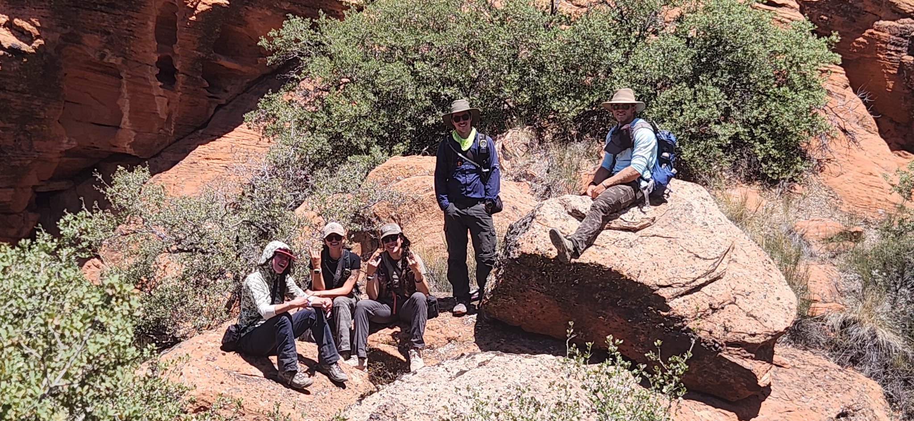

HANDS IN THE DIRT
Throughout my career I've been lucky to work in some incredible landscapes doing hands-on wildlife, restoration, and conservation work. Most of that time I've worked alongside other technicians, volunteers, rangers, students, and agency biologists who have shaped how I think about connecting field work with big-picture conservation goals. My approach to field work is rooted in curiosity and willingness to learn, teamwork, and respect for the ecosystems I work in.
Wildlife

Reptiles
Primarily my field work has centered around the monitoring of Gila monsters, and Mojave desert tortoises in the Mojave desert. See my research page to learn more about my work with Gila monsters! My work with Mojave desert tortoises has included radio-telemetry, post-fire mortality assessments, relocations, USFWS protocol clearance surveys, and supervising crews and volunteers. I’ve also supported work on speckled rattlesnakes and general reptile sign surveys across sand dune and rocky habitats.
Mammals
My experience with mammals has primarily been in collaboration with state and local agencies in Utah. I’ve monitored kit fox den sites to track occupancy, pup development, and behavior over time. I’ve also helped with beaver relocations, assisting in transmitter attachment, and monitoring recovery. Additionally, I assisted with bat mist-netting and white-nose syndrome monitoring. Internationally, I spent time working in Kruger National Park, helping with wildlife monitoring, conducting game drives, assisting in necropsies, and supporting anti-poaching efforts.


Fisheries
I've assisted with biannual native fish monitoring on the Virgin River, working in close-knit crews to conduct full-pass seining, hoop-netting for Virgin River chub, backpack electrofishing, and habitat mapping. I’ve also snorkeled for woundfin and other desert fishes, paying attention to flow patterns and microhabitat use. During a study abroad at Heron Island Research Station in Australia, I spent long days free-diving and snorkeling to study coral reef fish behavior. I also completed an ichthyology course at APSU, where I learned to identify regional fish species and practiced common sampling and survey methods.
Conservation & Habitat Restoration
Restoring Desert Habitat
Multi-year planting and monitoring of thousands of native plants in National Conservation Areas
Invasive Weed Management
Herbicide and hand-removal of invasive plants in sensitive wildlife habitat.
Trail Work
Trail maintenance and building to maintain safe access routes in public lands.

Fuels Reduction
Chainsaw and fuels work as a USFS B-Faller thinning pinyon–juniper stands and removing hazard trees.
Public Land Stewardship
Supporting signage, fencing, and visitor outreach in desert National Conservation Areas.
Pollinator Conservation
Designing synthetic bee nests and monitoring parasitic wasps at the USDA Bee Lab.